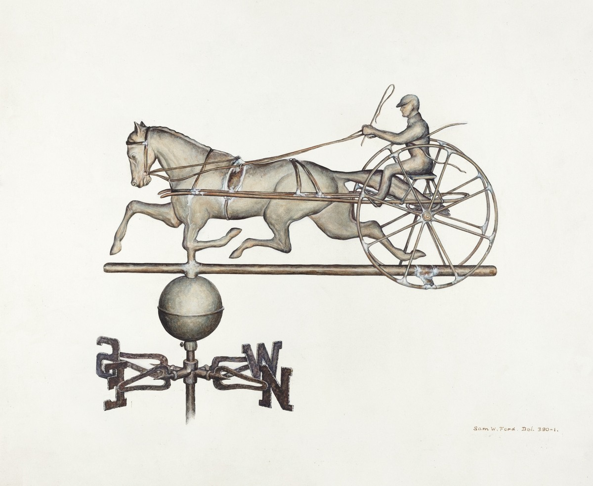

Ciencia de Datos para Activismo Jurídico
¿Para quién es esto?
Antes de empezar
1
¿Qué es la ciencia de datos?
1.1
¿Qué significa hacer ciencia de datos?
2
Una presentación a toda marcha de R
2.1
Nuestro primer proyecto en R
2.1.1
A investigar: ¿Cual es la diferencia en mortalidad infantil entre el sur y el norte de la Ciudad Autónoma de Buenos Aires?
2.1.2
Crear un proyecto en RStudio
2.1.3
Escribiendo un script
2.1.4
Cargar los datos
2.2
Visualización: la exploración gráfica de la información
2.2.1
Haciendo mapas
2.2.2
Agregando datos
2.3
El veredicto final
2.3.1
¿Cuál es la diferencia en mortalidad infantil entre el sur y el norte de la Ciudad Autónoma de Buenos Aires?
2.4
Ejercicios
2.5
Primeros pasos al examinar un conjunto de datos nuevo
2.6
Cruzando variables: la operación
join
2.7
Transformando los datos
2.7.1
Seleccionar columnas con
select()
2.7.2
Filtrar filas con
filter()
2.7.3
Ordenar filas con
arrange()
2.7.4
Agregar nuevas variables con
mutate()
2.7.5
Extraer sumarios con
summarise()
2.7.6
¡BONUS! El operador “pipe”:
%>%
2.8
Ejercicios
2.9
Una buena visualización para empezar: el
scatterplot
2.10
Ajustando color y tamaño
2.11
Facetado
2.12
Gráficos de barras
2.13
Histogramas
2.14
Preparando una visualización para compartir
2.15
Otras visualizaciones
2.16
Ejercicios
3
Analisis de texto
3.1
Ejercicios
3.2
Los datos georreferenciados
3.3
Formatos de archivo
3.4
Explorando un archivo con información geográfica
3.5
Visualizando información geográfica
3.6
Volcando en el mapa información de múltiples fuentes
3.7
Combinando capas geográficas
3.8
Ejercicios
Publicado con bookdown
Ciencia de Datos para Activismo Jurídico
